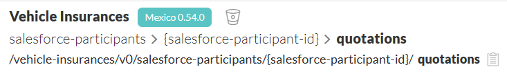
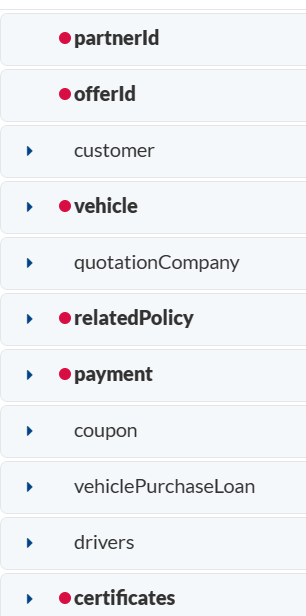
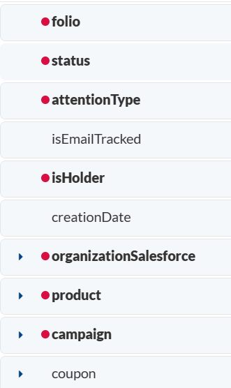

Quotation Tracking | Salesforce
Dentro del presente documento se redacta a detalle la justificación del diseño expuesto por la cédula de ASO, para el equipo de Refactor N2 Wibe
Contenido
Definición
La definición del endpoint existente NO presenta algún tipo de compatibilidad con los requerimientos solicitados en la solución expedida por el equipo de Refactor.
Estas incompatibilidades darían pie a múltiples situaciones, que dependiendo de lo complejas que sean, podrían desembocar en errores críticos de sistema.
A grosso modo (y por mencionar algunas), las incompatibilidades son las siguientes:
URI Parameters
- Para poder crear una cotización, es necesario tener una cuenta registrada en los sistemas de Salesforce, es por ello que para poder localizar o identificar el recurso es necesario (siguiendo los estándares de REST, claro) ubicar dentro de la URI del servicio, el URI parameter correspondiente.
| API Productivo | API Salesforce |
|---|---|
|  |
Primordialmente, no podríamos simplemente agregar el parámetro ya que la URI se vería enteramente modificada, significando eso un cambio no retrocompatible, además de que ese dato únicamente lo manejan los sistemas de Salesforce (el id de participante), los demás clientes del API no podrían hacer uso de este servicio, debido a que no cuentan con este id al momento de querer consumir el servicio
Vehicle
- La definición del objeto vehicle dentro de los datos que viajan hacia el recurso de la cotización NO es requerida.
| API Productivo |
|---|
 |
El API actual, debe enviar en cada solicitud datos sobre el vehículo, esto no podría ser replicado por Salesforce, debido justamente a que en su diseño estos datos no son requeridos, y al ser una propiedad de carácter obligatorio en el API productivo, estaríamos obligando a Salesforce a que nos envíe información que no poseen en ese momento del uso del servicio, nuevamente generando acciones bloqueantes para usarlo
Cotizacion
- La definición de los datos que usa el recurso cotizacion entre el API actual y el diseñado para Salesforce son altamente incompatibles, esto es por los requisitos de propiedades de cada unos de las API mencionadas.
| API Productivo | API Salesforce |
|---|---|
|  |  |
Dentro del API actual se encuentran las siguientes propiedades de carácter obligatorio:
- offerId
- relatedPolicy
- certificates
Este conjunto de datos no podría ser informado por Salesforce, justamente porque no cuenta con los mecanismos para recopilarlos, mucho menos obligaríamos a enviar datos sin ningun tipo de sentido en el proceso, los llamados datos “dummies”, esto representa una pésima práctica.
Dentro del API de Salsesforce se encuentran las siguientes propiedades de carácter obligatorio:
- folio
- status
- attentionType
- isHolder
- organizationSalesforce
Se presenta el mismo caso anterior, solo que ahora el API productivo sería el que no pudiera enviar estos datos requeridos por Salesforce; los clientes del API actual, NO cuentan con esa información, esa información es exclusiva del equipo de Refactor.
Como se puede observar, múltiples son los escenarios en los que no tendría algún tipo de sentido enviar o declarar estas propiedades nuevas o existentes en solicitudes hacia el servicio, de ser así, representaría una acción irrelevante o en el peor de los casos, una acción bloqueante para los clientes que interactúen con el servicio.
Flujo
Dentro de la solución del equipo de Refactor se plantea una cotización, como un proceso de negocio, no como un recurso exclusivamente aislado.
Esto quiere decir que para Salesforce, una cotización, sí, es un recurso aislado, pero incompleto (por eso lo de exclusivo), lo que lo complementa serían los recursos adicionales de participants (customer) y vehicles (vehículo).
Para hacerlo un poco más digerible, la cotización es un proceso en el que se interactúa con múltiples recursos, y todos funcionan de manera compuesta para lograr un fin en particular, ser la información que complete una cotización, por lo que la información de los datos inherentes a la cotización si que viajarían dentro de las peticiones del servicio diseñado (requests), pero, únicamente los datos inherentes a la cotización (fecha de creación, id, etc), la información de los participantes y vehículo, sería información complementaría que viajaría en otras peticiones, mediante otros servicios.
Esta información no forma parte del recurso de cotización en sí, si no más bien son usados dentro de todo el proceso de lo que implica crear una cotización (He ahí lo de que es un proceso de negocio, no un recurso exclusivamente aislado).
Si lo vemos de un punto de vista arquitectural, esto podría respresentar un pequeña implementación de una arquitectura SOA o de Microservicios, la cual dicta que cada “servicio” es el único responsable de sus datos referentes a su recurso (cumpliendo así el principio de cohesión).
Esta separación de responsabilidades es debida a las bifuraciones del proceso de negocio del equipo de Refactor, dentro de su flujo, la información que completa una cotización dependerá del momento en el que cliente se encuentre dentro de su cotizador web (esto es importantísimo), siendo así que las API’s seran llamadas en momentos distintos.
Esto supone que la información es recopilada de forma no lineal, y no puede ser enviada toda de golpe (ya que no existe) generando dependencia entre nuestros recursos, dependencia que no existe en el API actual.
Nuevamente, los llamados a las API’s dependerán exclusivamente del flujo que el cliente que este cotizando, decida seguir; pudiendo escoger entre varios flujos alternos y ahi es donde el API existente no puede seguir el ritmo.
Al final, la información de todos los recursos aislados, completarán el móvil de este proyecto, crear una cotización.
Es por eso, que el API productivo no es una opción viable debido a la naturaleza de la definición en la solución expuesta por el equipo de Salesforce, el flujo, tanto de los eventos como de las comunicaciones que deberían de hacerse para cumplir con el objetivo, presenta un puñado de diferencias en comparación de lo que se realiza en el cotizador actual.
Conclusión
Si se optara por modificar el endpoint existente se supondría una labor de diseño y desarrollo mucho más extensa, agotadora y propensa con altas probabilidades a errores críticos.
Ya que estaríamos dependiendo de que los clientes actuales del servicio quieran acoplarse al nuevo uso y diseño del API que les funcionaba estupendamente con anterioridad, esto escalaría a nivel de código para el cliente (y dudo mucho que quieran hacer un cambio de esa índole), ya que habrá que modificar la forma en la que es llamado el API en sus piezas que lo esten consumiendo, inclusive, añadiríamos una complejidad bárbara a la hora de querer hacer pruebas.
Además, estaríamos violando principios del buen diseño, provocando un descenso en la calidad de los servicios desarrollados en la organización (y no queremos eso).
Los principios no cumplidos serían los siguientes:
El software debe de ser cerrado a la modificación, pero abierto a la extensión.
Las piezas de software deben de corresponder a una alta cohesión y un bajo acoplamiento.
Por lo tanto, ambas opciones “adaptar” o “extender” la funcionalidad de la pieza solicitada quedarían descartadas, debido a que en teoría estaríamos modificando algo que ya se encuentra funcionando de manera óptima, no estamos extendiendo su funcionalidad.
Al contrario, estaríamos potenciando la adquisición de incompatibilidades con los demás clientes, generando más conflictos y problemas que no existían en la premisa.
Finalmente pero no menos importante, recalcar que en el departamento de ASO somos responsables de la excelencia y alta calidad de las piezas de software del banco, por lo que sería nuestra responsabilidad cumplirlos y generar la mejor solución posible.